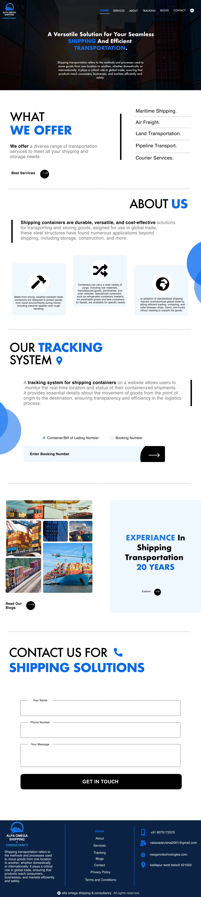

Alfa Omega Shipping & Consultancy Website
Alfa Omega Shipping & Consultancy Website A modern shipping and logistics website designed to showcase transportation services, simplify shipment tracking, share industry insights through blogs, and provide businesses with a seamless enquiry experience through a clean and professional interface.

Project Overview
This project is a modern shipping and logistics website designed for Alfa Omega Shipping & Consultancy to showcase transportation services, simplify shipment tracking, and help businesses connect with the company effortlessly. The primary goal was to organize complex logistics information into a clean, professional interface that builds trust while making it easy for visitors to explore services, track shipments, read industry updates, and contact the company. Instead of overwhelming users with technical information, the website presents every section in a structured way that guides visitors naturally toward taking action.
Project Information
UI/UX Design
Shipping & Logistics Website
Figma
Responsive Website
Design Challenge
Shipping and logistics websites often contain large amounts of technical information, making it difficult for users to quickly understand available services or complete important tasks like shipment tracking. The challenge was to design a website that: Builds trust from the first visit. Clearly presents logistics services. Makes shipment tracking quick and accessible. Explains transportation solutions without overwhelming users. Encourages visitors to contact the company. Maintains a professional corporate identity.
User Experience Design Goals
Service Discovery
Learn about shipping services quickly.
Shipment Tracking
Track shipments without confusion.
Logistics Solutions
Explore logistics solutions easily.
Industry Updates
Read industry updates.
Build Trust
Build confidence in the company.
Easy Contact
Contact the business with minimal effort.
Design Process
Research & Requirement Understanding
Identified business goals, logistics services, and user requirements to create an efficient and trustworthy shipping experience.
Information Architecture
Organized services, shipment tracking, company information, and navigation to help users access key logistics features with ease.
UI Design
Designed a clean, professional interface with modern visuals, clear typography, and strong visual hierarchy to reinforce credibility.
Interactive Prototype
Created interactive user flows to validate service navigation, shipment tracking, and contact interactions before development.
User-Focused Logistics Experience
Refined the complete user journey to help visitors understand services, track shipments, and contact the company through a simple and intuitive experience.